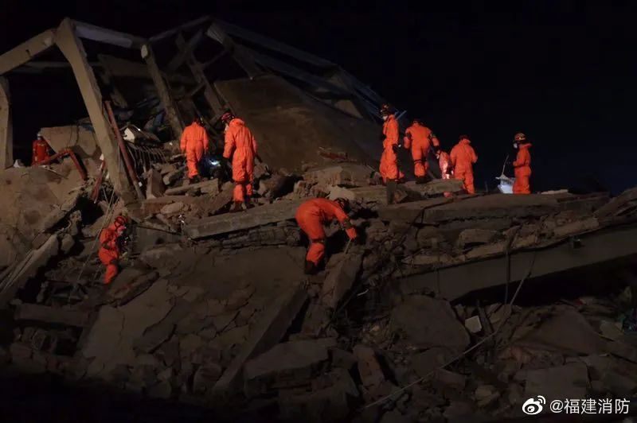
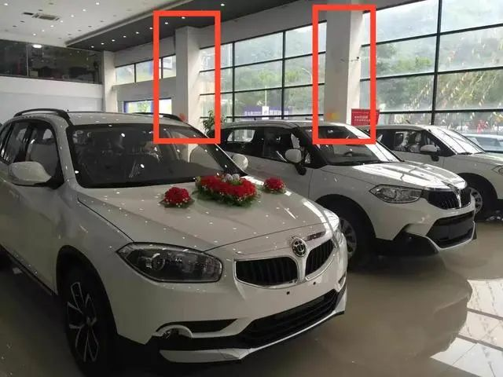

泉州隔离酒店坍塌：被忽视的结构风险
原文链接 备份链接 记者 | 李秀莉 郜超 实习记者 | 李晓洁 3月7日晚7点左右，泉州市鲤城区南环路欣佳酒店发生楼体坍塌事故，该酒店是鲤城区新冠肺炎医学观察点，逃生9人，受困71人。截至本刊发稿，事故现场已救出48人，其中10人死亡。 …
记者 | 李秀莉 郜超
实习记者 | 李晓洁
3月7日晚7点左右，泉州市鲤城区南环路欣佳酒店发生楼体坍塌事故，该酒店是鲤城区新冠肺炎医学观察点，逃生9人，受困71人。截至本刊发稿，事故现场已救出48人，其中10人死亡。
根据本刊对多位居民和商户的采访，该酒店为一栋轻钢结构厂房改造而来，而早在三年前，该酒店大楼就发生过多次窗户爆裂的问题。危险的信号早已通过某种方式进行传递，却始终未被重视，直至大楼轰然倒下。
突然坍塌
3月7号晚上7点左右，泉州鲤城区南环路一家甜品店的老板洪超刚刚送完一单外卖回到店里，正在吃晚饭，忽然听到像是山体滑坡一样的声音，“像是山体滑坡，又像是地震，说不清楚。”大约一两秒后，震感消失，他跑出店铺，“外面浓烟滚滚，什么也看不清楚”。大概过了几十秒，粉尘渐渐散去，洪超看到路边一排汽车上面落满粉尘，路边有人喊着“全倒了！”这时他才看清，约30米外的欣佳酒店，像一根倾斜的筷子一样，已经倒塌了。
“灰尘全部起来了，把楼遮住，看不到房子，我们不知道是怎么回事，还以为是地面塌陷了，等灰尘下去的时候才看到，整个酒店向西北角方向倒塌了。”正在酒店对面茶铺和几个朋友泡茶的纪军听到巨响跑出去，也见证了这一幕。纪军向本刊回忆，倒塌的大楼共有7层，1层有欣佳酒店大厅、超市入口及其他店铺；2层有酒店的办公室；3层多为小商铺；4-6层是酒店房间；顶楼7层是员工宿舍与餐厅。

图源@福建消防
欣佳酒店地处市区外围，附近很多商铺，大部分都做二手车生意。根据一张落款为“高山社区委员会”的通知和当地民众的反映，疫情发生后，该酒店被泉州市鲤城区人民政府改造为区级医学观察点，用以隔离、观察外来人员及密切接触者，另一隔离点是鲤城区妇幼保健院。
一位曾租该楼店铺开过4S店的全德宝汽车销售有限公司老板王生告诉本刊，该酒店的生意在疫情之前一直就不错。即使后来离开此地前往别处开店，他还经常带着客户回来这里住，因为“既便宜又干净。”至于为何选择此酒店作为隔离点，王生向本刊推测，原因可能有两种，第一，该地区位置较为偏僻，周围的居民楼较少；第二，该酒店为独立建筑，疫情期间一楼的商铺也大多未营业，可以防止交叉感染。
灰尘稍微散去，纪军和几个朋友穿过马路，跑到倒塌大楼旁边，准备救援。纪军是退伍军人，同行的朋友中也有3个是一起当过兵的。“因为害怕房子会出现二次事故，就有两个朋友在酒店旁边看着，不让老百姓往里面靠，还有一个人在那边引导。后来也有好几个年轻小伙子过来帮忙疏导。”纪军说，“酒店那一片区域的霓虹灯全没了，黑乎乎的。”但这时候已经有两三个人一瘸一拐地，从塌掉的建筑物中走出来。
洪超在附近也看到了自行逃生的那几个人，他对本刊描述，“有两个穿警服的人从一层出来，受伤比较严重，浑身是血和灰。还有一个女性从顶楼那边走出来，没受什么伤，只有膝盖有刮伤。”
纪军告诉本刊，大约二十分钟，派出所的人最先到达现场，之后又陆陆续续来了其他救援队伍，整条南环路拉起了警戒线，非专业救援人员不能靠近现场。据报道，事发当晚，省、市、区三级调动消防、武警、医疗、应急管理、公安、住建等救援力量1000多人，展开全方位搜救。
由厂房改造的酒店
泉州市鲤城区住建局局长张翼在此前接受采访时表示，今年春节前，房屋业主将一楼出租的超市收回重新改装。3月7日晚上7时，房主接到现场施工人员电话称，在进行作业的一楼房屋一根柱子发生变形。三四分钟后，楼梯整体坍塌。张翼称，该楼房坍塌是因为装修，还是原来结构问题，还需进一步甄别。
不过，事故的发生，往往是一系列偶然事件的集合,每一条偶然背后都隐藏着必然。

图源@新浪福建
危险的信号至少在两年前就已显现。从谷歌地图上看，全德宝汽车销售有限公司的牌子还挂在欣佳酒店的外墙上，但公司老板王生告诉本刊，2017年他就已经退租，退租后店铺被改建成了欣佳酒店的大堂。退租的原因，一个是地理位置不好。另一个，就与建筑本身的安全性有关。
2013年，该大楼刚建成不久，王生作为第一批入驻的商户之一，从房东杨金锵的手里租下了1楼和7楼共计1000多平的店铺，月租四万多。2014年王生的4S店开业。“当时租店时，看过大楼的规划图。”**王生告诉本刊，在他记忆中，大楼主体为钢结构。“当时楼板都没有，从二层可以直接看到六层楼顶，中间由几根工字钢支撑，没有加固。有几根柱子看起来是混凝土，但其是钢管外包了木板。一层也全是玻璃门窗，没有实体墙面。”
**
事发后，根据泉州市鲤城区住建局的消息，该楼房占地5亩，建筑面积约7000平方米，属于钢结构房屋。
北京建筑大学设计学院院长王伟告诉本刊，和混凝土结构相比，钢结构空间跨度比较大，更适合做商场、厂房，而用作住宅或酒店的话，对技术要求比较高。“混凝土结构空间跨度一般10米左右，钢结构很轻松地就到20米甚至更高。”
事实上，该楼设计之初就是作为厂房使用的。曾在附近开机械厂的花辰介绍，2012年到2014年间，他的机械厂开在距离300米左右的街对面，一周要路过这里几次，他回忆当时附近“比较荒凉，这座楼孤零零的，对面是一些杂牌4s店”。直到现在，人口密集区都在平行的江南大道一侧，“过去的南环路两边很荒，从浦口环岛到泉州车管所，基本就是新车，二手车，汽车服务一条街。所以这个楼最初就是为了汽车行业服务的，不是用作酒店的。”
然而，在欣佳酒店周围，南环路、江南大道和泉南高速两两相交，构成了一片三角地，村民所有的建设用地在这里野蛮生长。花辰告诉本刊，这里很多楼体设计不是正规公司做的，都是一些几个人的小工厂凭经验做。**“楼的产权，是村集体用地，承包给私人使用。以前情况不好，就盖个厂房。情况好了，就改成4s店、酒店。发展快了，就从二产变三产了。”
**

欣佳酒店为钢结构，钢管外侧用木板包装。 图源新京报
逐渐丰富的配套也为酒店开张做好了准备。一位不愿透露姓名的知情人士告诉本刊，欣佳酒店的股东之一是他的朋友，考虑到那块区域没有酒店，旁边做二手车生意的人多、工厂多，同时附近的驾校、车管所等设施有丰富的人流。2018年，股东与杨金锵合伙开酒店。酒店建成后，知情人士曾因工作关系多次居住，“那边生意一直不错，做二手车生意的多，有时候车主来收车，没收完就会住酒店，我有几次去还没订到房间。”
到了2017年，大楼房东杨金锵开始对大楼进行装修，改建酒店。王生回忆，当时杨金锵叫来建筑工人，指挥他们在大楼的原有结构上加盖楼板，整个改建过程“没有找专业人士来帮忙设计。所以根本就不知道自己加了多少重量上去。”
王生并不清楚该大楼改建的手续是否齐全，但他记得装修过程中城管局的人过来叫停过好几次。后来，“可能是大楼核载加重，玻璃经常无故爆破”，他就此问题多次找过杨金锵，对方的回复是，“地基稍微下沉，很正常。”因为玻璃赔偿的问题，双方还多次发生纠葛，“再加上装修时期粉尘很严重，影响生意，我就搬走了。最后也不知道有没有验收。”
工商资料显示，欣佳酒店的法人是杨金锵。根据本刊采访到的附近多位商户回忆，2018年，欣佳酒店改造完成，并于当年6月开业，酒店有各类客房计66间。2018-2019年，欣佳酒店因多次未按规定办理住宿登记，而被泉州市公安局鲤城分局处以行政处罚。2019年，欣佳酒店因未按《个体工商户年度报告办法》规定报送年度报告，被列入异常经营名录。
危险的结构
一位参与此次救援行动的应急管理专家沈博，在事故当晚就有了初步判断。沈博通过舆情监测公司爬取到了图片资料，他研究了废墟中崩坏的墙体认为，结构失稳的问题更大。
沈博告诉本刊记者，酒店当初的改建方式就是单纯的钢结构+填充墙，“墙会整面地倒，是因为和承重的钢结构没有‘强连接’，对一般建筑而言，先是混凝土立柱，然后砖砌墙，有水泥做粘合剂。而且墙是承重的，会被越压越实。”
另一方面，他分析，一楼装修如果动了墙，或者动了地基，也可能是坍塌的一个诱因。不过，这次小规模装修肯定不会是最重要原因，关键还在于几年前的酒店改造。
“反过来说，轻钢结构没有承重墙，是桌子一样的结构，靠柱子支撑，中间的砌体墙是起不到作用的。如果设计者不懂行，装修的时候不加柱子，而是按照古典的做法进行砌墙，以为这样就能承重了，但如果整个建筑是钢结构，这种设计是非常错误的。就像你在桌子腿之间砌上墙，并不能保证桌子不倒。”一位不愿具名的结构工程专家告诉本刊。

图源@新浪福建
当晚9时，沈博又通过一家地图公司提供的历史数据，确认这处楼宇在2017年的结构还是一处厂房，供当时一楼4S店和维修站使用。沈博告诉本刊，由于初期设计用途是厂房，2017年改建成住人的酒店时，就要加楼板、加墙、加装修水暖管道和楼顶水箱等设施，下层承受大的重量大幅提升。以水箱为例，80人的客房一般要配备10吨的顶楼水箱，“十吨不算太重，一般水箱都是在楼顶的，可以利用高度施加水压。只不过停车场肯定是不需要这么大水箱的，这属于额外加了重量。而且水箱要配备相关设施，其实这些压力机泵运转时候带来的振动也有影响。”
沈博对着一楼停车场的照片分析：“如果反过来，底层酒店，上方商铺，可能威胁还小一些。”他向记者标注了照片中车库中间的一排立柱：“这些是承重的，但是相对容易失稳。就比如四根火柴支起来一个火柴盒。撑起来是没问题的，但是火柴盒一晃动就会倒下来。”沈博所说的火柴盒，正是隐藏在照片中一楼天花板之上，跨越6层的停车场、餐厅、办公室、酒店、足浴中心和员工宿舍等场所。
然而，直到2020年楼体最终倒塌，中间为什么可以经历如此漫长的时间？根据王生的说法，该建筑在2017年即出现窗户爆裂的征兆。“窗户爆裂、地面爆裂，说明建筑的结构开始变形，马上要失去稳定了。”王伟告诉本刊：“但是钢结构建筑可以经历一个柔性的变化。钢是有粘性的，比如我把一个钢筋拉断之前，它先是有一个大变形，然后达到一个新的平衡，不会立刻就断。但这时候已经很脆了，再继续施力就会断。这和混凝土结构不一样，混凝土在拉力下可以立刻断裂。”
回到初建成的2012年，在花辰的印象里，楼体外墙未被广告牌遮挡的左半边，钢结构裸露在外，没有地板，没有墙，没有外立面，从外面就能把整栋楼看个通透。这个纯粹由钢结构组成的一半，正是欣佳酒店后来的客房所在地。从楼体倒塌前的照片中，脆弱的钢结构已不见踪影，覆盖楼体表面的，只有通透却不能承重的玻璃幕墙。对于那些前来隔离的居民，危险已埋伏在墙内。
（洪超、纪军、王生、沈博、花辰为化名）
大家都在看
⊙文章版权归《三联生活周刊》所有，欢迎转发到朋友圈，转载请联系后台。
点击图片，一键下单
「*营造学社*」

***************▼ 点击阅读原文，******************************进入周刊书店******************************，购买更多好书。***************
文章已于修改
原文链接 备份链接 记者 | 李秀莉 郜超 实习记者 | 李晓洁 3月7日晚7点左右，泉州市鲤城区南环路欣佳酒店发生楼体坍塌事故，该酒店是鲤城区新冠肺炎医学观察点，逃生9人，受困71人。截至本刊发稿，事故现场已救出48人，其中10人死亡。 …
原文链接 备份链接 酒店在装修期间，就曾引发同楼商户对承重能力的担忧。“在酒店装修的那两三个月，因为压力问题，我们一楼商户的门窗玻璃被挤压炸裂五六块，后来觉得房子太危险，我就搬走了。” 记者 | 吴 雪 3月7日，随着莆田、漳州两市11名 …
原文链接 备份链接 记者/曹慧茹 李佳楠 佟晓宇 李东 实习记者/周缦卿 编辑/ 石爱华 宋建华 泉州一七层建筑整体坍塌 3月7日19时15分，泉州市鲤城区一栋大楼发生整体坍塌事故，事故现场共有71人被困（不含自救逃生的9人）。截至3月8 …
原文链接 备份链接 该酒店之前被改造为泉州鲤城区的医学观察点，用以隔离观察密切接触者，事发时被困人数约70人。参与救援的人士表示，现场情况“惨烈”。知情人称，酒店所在建筑曾进行大规模改造 文 |《财经》记者 俞琴 白兆东 鲁伟 编辑 | …
原文链接 备份链接 为何将这座屡次被罚 且所在建筑内部仍在装修的酒店 定为疫情隔离观察点？ 3月7日晚，泉州鲤城区欣佳酒店所在的建筑发生楼体坍塌，楼内9人自行逃出，71人被困。截至3月8日16时，已救出48人，其中10人死亡，余下38 …